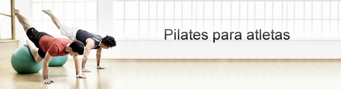
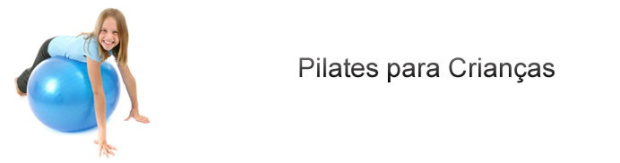
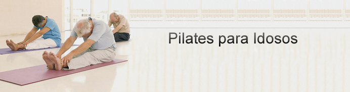
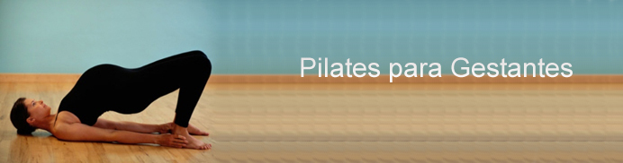

|
|
||||||||||||
|
|
|
|
|
|
|
|
|
|
|
|
|
|
|
|
|
|
|
|
|
|||||||
Criado pelo alemão Joseph Pilates na década de 20, o método
Pilates chega ao Brasil na década de 90, auxiliando na correção
postural, fortalecimento muscular, mobilidade articular, entre outros benefícios.
A técnica une princípios orientais e ocidentais aos exercícios.
Os aspectos orientais podem ser percebidos através do controle da
respiração, o desenvolvimento da flexibilidade e uma maior
concentração que permite ter maior consciência ao se
exercitar. Já os princípios ocidentais estão voltados
ao condicionamento físico e ao desenvolvimento da força, com
uma preocupação específica com os aspectos estéticos
de força muscular, condicionamento físico e correção
postural.
A partir daí, Joseph Pilates, desenvolveu a técnica com base
em seis princípios que devem estar ligados diretamente a cada movimento,
com o objetivo de alcançar o tão desejado equilíbrio
físico e mental, são eles: a concentração, a
respiração, o acionamento do centro de força, a precisão,
o controle e a fluidez de movimentos.
A prática desses princípios proporciona uma maior consciência
de seu corpo e de suas possibilidades, oferecendo inúmeros benefícios
para o corpo, para a mente e para a alma.
Certamente, o Pilates traz um bem-estar maior para a saúde geral,
contribuindo para uma melhora na qualidade de vida, através do alívio
de tensões, eliminação do estresse físico e
mental do dia-a-dia.
BENEFÍCIOS
A prática regular do método Pilates traz excelentes benefícios
aos alunos que conseguem perceber em poucas semanas as mudanças.
Conheça os principais:
- Melhora a capacidade cardiorrespiratória;
- Incrementa o condicionamento físico e mental;
- Alivia problemas relacionados ao estresse, diminuindo tensão e
fadiga;
- Melhora o desempenho sexual;
- Melhora a osteoporose;
- Melhora o sono e memória;
- Propicia a harmonia do corpo, tornando-o mais equilibrado, flexível
e forte;
- Melhora a força, a elasticidade muscular e mobilidade articular;
- Melhora a postura eliminando maus hábitos, levando ao correto
alinhamento corporal;
- Fortalece a musculatura abdominal;
- Desenvolve os músculos que sustentam a coluna, eliminando dores
crônicas;
- Mantém a mente alerta;
- Melhora o desempenho de atletas;
- Melhora a auto estima;
INDICAÇÃO
O método Pilates é indicado para todas as pessoas (homens, mulheres, crianças a partir de 9 anos e idosos). Podem participar das aulas atletas, crianças, adolescentes, adultos e idosos que já praticam atividade física regularmente, aqueles que não praticam atividade há muito tempo e quem nunca realizou nenhum tipo de atividade física.
Veja como o Pilates pode beneficiar a sua vida:
PILATES SPORT - PARA ATLETAS
Os benefícios do método para os atletas são diversos.
A prevenção de lesões está em primeiro lugar, mas também se pode considerar a correção de desequilíbrios musculares, o ganho de força muscular específica em determinados gestos da atividade, o aumento da capacidade respiratória e eficiência do diafragma e, consequentemente, a melhora do desempenho também são observados.
Nos últimos anos muitos esportistas, como por exemplo: surfistas, corredores, nadadores, tenistas, jogadores de futebol, de vôlei, dançarinos, entre outros, estão entre os praticantes do método. Com a prática de Pilates aprendem a dosar a energia, distribuir forças e utilizar, de forma inteligente, a gravidade a seu favor, aproveitando a eficiência do seu sistema de fáscias, ganhando em rendimento, saúde e melhores resultados.
Inclua o Pilates na sua rotina e perceba melhorias evidentes em seus resultados!

PILATES PARA CRIANÇAS E ADOLESCENTES
Atualmente, crianças e adolescentes vivem em um ambiente acelerado e competitivo. O resultado disso é o estresse, a falta de concentração e a má postura. A prática de carregar mochilas pesadas para a escola, a postura relaxada no sofá em frente à TV ou ao computador e, até mesmo a quantidade excessiva de atividades são fatores que contribuem para que as crianças e os adolescentes adquiram os chamados maus hábitos e tenham um ritmo de vida muito exigente. Perdem com isso a postura e a saúde para toda a vida.
A concentração, a respiração, o controle, o
alinhamento, a precisão, a fluência, o ritmo e o compromisso
com o corpo todo, elementos fundamentais para a vida das nossas crianças
e adolescentes, são a base de todos os exercícios de Pilates.
Entre os benefícios para as crianças e adolescentes que praticam
o Pilates, estão a organização do sistema locomotor
e a melhora da postura, da concentração, do humor, do sono,
da circulação sangüínea e energética, da
digestão, do tônus e da flexibilidade.
Inclua o Pilates na rotina do seu filho e veja as mudanças!

PILATES PARA IDOSOS
Chegar à Melhor Idade com saúde e uma excelente qualidade de vida vêm sendo o objetivo de muitos. Mas, se você já está na Melhor Idade, o momento de manter o equilíbrio entre o corpo e a mente e/ou prevenir dores indesejadas é agora!
O Pilates é um exercício muito eficaz para amenizar e até
mesmo reverter os efeitos do tempo sobre o corpo. Como o método dispõe
de uma série de exercícios de baixo impacto, não há
pressão sobre as articulações enquanto os movimentos
são executados, tornando-o ideal para os praticantes da terceira
idade.
A prática do método estimula a produção e a
demanda de cálcio para os ossos que possam estar fragilizados, proporcionando
lubrificação e aumento da amplitude dos movimentos para as
articulações comprometidas, respeitando os limites e avanços
de cada um dentro das aulas. Por isso, os portadores de enfermidades como
artrose, artrite reumatóide, artroplastia e discopatias degenerativas
(degeneração das vértebras e discos da coluna), osteopenia
e osteoporose também podem obter melhorias com esta rotina de atividades.
Contudo, o maior ganho da prática talvez seja a melhora que ela proporciona à auto-estima.
O Pilates incentiva a vontade de aprender e viver, proporcionando melhor qualidade de vida!

PILATES PARA GESTANTES E PÓS-PARTO
Pilates para Gestantes
A gravidez é uma época de mudanças significativas no
corpo de uma mulher. Durante o período de 9 meses de gestação,
o corpo irá passar por diversas mudanças físicas e
emocionais em preparação para o nascimento. Uma gravidez saudável
inclui uma dieta adequada, exercício moderado para leve, calma e
relaxamento.
Você pode cuidar de seu corpo durante a gravidez praticando Pilates
antes e após o parto. Pilates é uma forma de exercício
que não exerce impacto que fortalece e alonga o seu corpo. Os exercícios
de Pilates também podem ser ajustados no curso da sua gravidez para
atender às necessidades de mudança de uma gestante. Os benefícios
do Pilates incluem maior estabilidade, controle da respiração
e redução do estresse, que podem ajudar a gerenciar as mudanças
de vida durante e após a gravidez.
Pilates início pré-natal
Antes de iniciar qualquer treinamento Pilates durante a gravidez, é
importante procurar a aprovação do seu médico para
iniciar um programa de exercícios. Se você está tendo
uma gravidez sem complicações, é geralmente seguro
para realizar o exercício leve a moderada durante a gravidez.
Você deve informar o seu instrutor de Pilates da gravidez, para que
as modificações necessárias possam ser feitas.
Pilates, gravidez, e Segurança
Há significativas mudanças fisiológicas que ocorrem
no corpo de uma mulher durante a gravidez e, portanto, adicional de precauções
são necessárias durante o treinamento Pilates.
• Proteger suas articulações
Além das mudanças físicas em seu tamanho e forma durante
a gravidez, o sistema hormonal em seu corpo também está mudando,
em preparação para o nascimento. Durante a gravidez, o hormônio
relaxina aumenta ajudando a aumentar as suas articulações
para parto mais fácil. Infelizmente, isso também contribui
para uma maior flexibilidade em todas as suas articulações
que conduzem à instabilidade articular. Portanto, é importante
evitar qualquer movimento físico com uma vasta gama de movimento,
tais como overstretching, o que aumenta a possibilidade de lesão.
• Ficar equilibrado
O alargamento do seu abdômen vai mudar o seu centro de gravidade.
Pilates pode ajudar a fortalecer seus músculos do abdome e membros
, fornecendo maior estabilidade.
• Movimentos seguro
Durante as fases progressivas da gestação, será necessário
ajustar a sua rotina de Pilates. O instrutor de Pilates, muitas vezes, recomenda
mudanças nos exercícios. Se você não pode confortavelmente
manter uma conversa durante o exercício, você está trabalhando
demais. Quando sua barriga começa a crescer (até o terceiro
mês), em seu terceiro trimestre, não execute nenhum exercício
em decúbito ventral, pois isso pode obstruir o fluxo sanguíneo
para o feto.
Benefícios do Pilates durante a gravidez
Pilates pode ter um impacto incrível sobre como se sente bem durante
sua gravidez. Iniciando a sua prática de Pilates durante a gravidez
pode beneficiar saúde.
• Controle da respiração
Um dos princípios-chave de treinamento Pilates é aprender
a conectar-se com sua respiração. A gravidez pode ser um momento
difícil em sua vida emocional, para aprender a relaxar de forma mais
eficaz pode ser uma ferramenta importante. Exercícios de respiração
também podem ajudá-lo a aprender a relaxar a entrega do corpo
auxiliando.
• Músculos abdominais mais fortes
Como sua barriga cresce, faz assim a pressão sobre as costas. Fortalecer
os músculos do abdômen, quadris e parte inferior das costas
pode preparar seu corpo para essas mudanças. É melhor evitar
exercícios de flexão, durante a gravidez, esses tipos de exercícios
comprimir o abdômen. É mais importante fortalecer os músculos
mais profundos de estabilização.
• Estabilidade melhorada durante o movimento
Durante o treinamento Pilates, você vai cultivar o equilíbrio,
a força do abdome, o controle muscular e a eficiência do movimento.
Esses atributos lhe permitirão desenvolver uma maior percepção
de seu próprio corpo durante este momento único de mudança
física. Manter sua conexão com o corpo vai melhorar a estabilidade
física e agilidade.
Pilates após a gravidez
Depois de se recuperar do parto, o Pilates pode ser uma rotina de exercícios
ideal pós-parto.
• Reconstrução do Corpo
Os exercícios de Pilates pode ser uma rotina de treinamento eficaz
para ajudar a devolver seu corpo à sua forma pré-gravidez.
Mesmo dia sim dia não pode ter um efeito profundo sobre a recuperação
do seu corpo à sua forma pré-gravidez. Os exercícios
de fortalecimento do abdome podem pressionar seu estômago e ajudar
a recuperar de diástase do reto, a separação muscular
do abdômen.
Se você tiver um parto cesárea, siga as recomendações
do seu médico sobre quando começar a se exercitar novamente.
A Cesárea é uma cirurgia significativa, e seu tempo de cicatrização
do abdômen deve será adequada.
• Força para o seu filho
O fortalecimento físico de exercícios de Pilates pode desempenhar
um papel importante em sua nova maternidade. A força adicional de
seu abdome e membros ajudarão na realização dos movimentos
realizados com seu bebê, como ser embalando durante a amamentação,
empurrando o carrinho, e mesmo levando em torno de todos os acessórios
do bebê necessário. Manter a postura adequada e evitar a mecânica
do corpo quando levantar o seu filho crescer irá ajudar a evitar
a tensão e lesões.

PILATES EM REABILITAÇÃO (PÓS-OPERATÓRIO)
Como reabilitação, o método também apresenta resultados significativos. Um deles é promover a recuperação mais rápida das lesões. Por trabalhar muito a musculatura abdominal, lombar e pélvica, o Pilates é muito indicado para dores lombares crônicas, além de várias outras lesões, como cervicalgia, dores inespecíficas do joelho, lesão de ligamentos, entorse de tornozelo, dor na região entre as escápulas, estiramentos musculares, síndrome do trato iliotibial dentre outras.
Esqueça as dores crônicas fazendo Pilates!